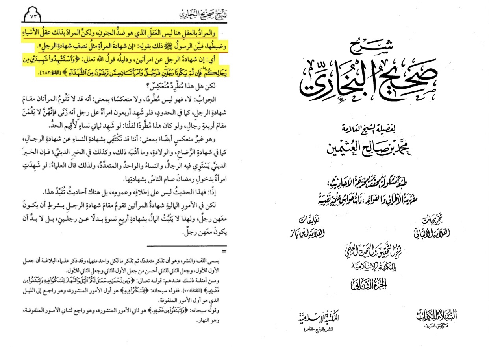

Does islam claim women are dumber than men?
This claim is often made using sahih al Bukhari 304 where the prophet Muhammad ﷺ said “I have not seen anyone more
deficient in intelligence and religion than you.” The issue here is that there is a mistranslation.
The Arabic word translated to “deficient” is “نَاقِصَاتِ” which should translate to reduction. We see the same word in
the Quran (13:41) and (21:44) and the word is not translated to “deficient” but “reduction”.
Now what does this reduction mean? The Hadith it’s self explains it. The reduction is not in regards to stupidity
rather the obligations of a women in islam are reduced.
The prophet ﷺ gives two examples in this Hadith. The first example is there reduction in religious obligations,
the prophet ﷺ says “Isn't it true that a woman can neither pray nor fast during her menses, The women replied in
the affirmative. He said, "This is the reduction in her religion." As for intelligence the prophet ﷺ said
“two women equal to the witness of one man?" They replied in the affirmative. He said, "This is the reduction
in her intelligence” As seen these are about the obligations being
reduced and not that the women is deficient compared to a man.
Lets see what scholars said
Translation: “and the meaning of aql (mind) here isn’t what we think with the contrary of foolisheness but it is the
meaning rembering things and fixing stuff that is how the prophet explained it with “isn’t the witness of a men
like the witness of 2 women”
-Source: Sharhu Sahih al-Bukhari ibn uthaymeen (RH) volume 2 page number 73 commentating on narration
number 304 print
of al-maktaba al-islameyah
Same thing said in fathul bari and Sharh Sahih muslim

And this is a general statement since we can notice pregnant women women on their periods and frustrated
ones have shorter memory then man
If they were stupid the prophet wouldn’t allow Aisha (AS) to be an excellent teacher
Sheikh uthman al-khamis says this is because women are more emotional than man this can be linked to what
ibn uthaymeen said, they have hard time fixing stuff because they tend to me more emotional when it comes to memory
Females tend to perform better than males in verbal-based episodic memory tasks, as opposed to spatial-based
memory tasks [10]. Females generally access their memories faster than males [11], date them more precisely [12],
and use more emotional terms when describing memories [13].
https://www.ncbi.nlm.nih.gov/pmc/articles/PMC6028920/
https://m.youtube.com/watch?v=1FpbeO5ctHU
https://m.youtube.com/watch?v=lBZU0vFxbcg
Ibn taymiyah said:
“For there are women smarter than man”
-Source: Majmu’ al-fatawa 6/447